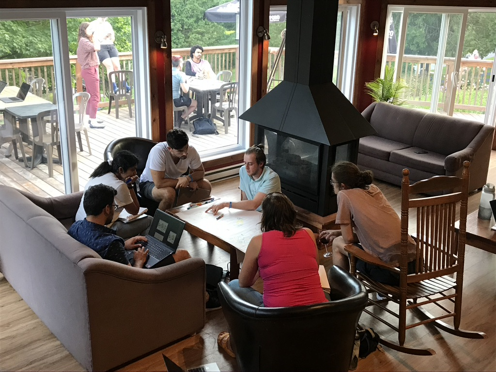

CIEE - Living Data Project, (Vancouver, BC)
February, 2023
Theme : Linking Species Distributions and Traits to understand Ecosystem Functioning
More information is available here.

BIOS2 Summer school, (Orford, QC)
August, 2022
Theme : Biodiversity Change and Data Visualisation
More information is available here.